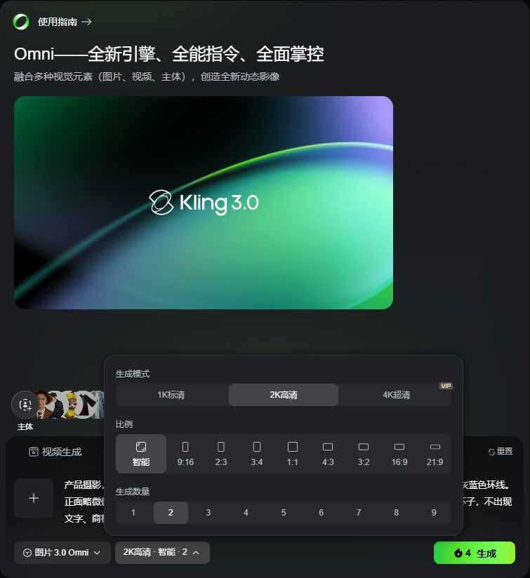
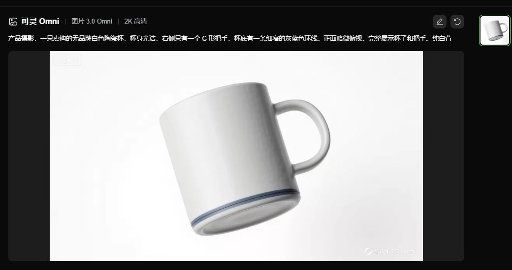

P25-kling-E1 · 用户自述
评价A描述个人参考与Bind Elements后出现人物复制/缺失、服装变化。
发布2026-08-07；体验2026-08-03 · 观察：2026-09-10
未读输入照片或视频；不记录姓名和关系，付款/质量均为自述。
可灵支持参考图、角色元素和动作要求下的视频生成，以及延长、音画处理和资产管理。普通用户报告过人物、动作或声音不符；官方精选则展示广告和影视采用。这些记录的选择方式不同，尚不足以估计总体交付能力和职业用户占比。
| 内容使用者 | 内容供给者 | 付款方 |
|---|---|---|
| 制作个人参考视频、叙事/动画镜头以及尝试效果的人；职业不能由发帖内容推定。 | 公开展示成片、写教程或参加合作计划的作者；有些同时是消费方，不能把合作作者当独立口碑。 | 个人订阅/积分购买有自述；团队会员和API有官方商业入口，采购人和使用人可能不同。 |
国际服务公开评论；不用照片推断身份或关系 · 有用户线索的候选画像
| 观察点 | 群体占比 |
|---|---|
| 1个可区分用户点 | 未知 |
| 问题 | 具体材料 |
|---|---|
| 任务 | 让指定人物在一个片段中保留外貌、服装和人数。 |
| 触发 | 已有自己的参考图，想把静态素材变成场景。 |
| 希望取得的结果 | 得到人物正确、动作符合要求的片段。 |
| 困难 | 人脸/服装漂移；复制或缺失人物；反复尝试持续消耗资源 |
| 需要的内容 | 清楚的参考准备、人数约束、常见失败与短片段验收方法。 |
| 替代方法 | 实拍、传统剪辑或其他图生视频工具；实际替代未观察。 |
| 持续使用记录 | 1位明确描述使用个人参考与Bind Elements后仍出现人物错误；没有实际媒体核验或分享结果。 |
| 回访假设 | 新照片和场景可带来继续使用；资源与质量落差也可能使人退出。 |
| 付费记录 | 有重复付费自述但未核账单；不代表所有个人用户已付款。 |
国际公开评价，涵盖叙事、卡通及后期拼接 · 5个任务观察点；仍为候选画像
| 观察点 | 群体占比 |
|---|---|
| 5个可区分用户点 | 未知 |
| 问题 | 具体材料 |
|---|---|
| 任务 | 制作一段可被剪入项目的镜头，而不是只要视觉惊奇。 |
| 触发 | 已有故事、动作、口型或镜头指令，需要输出与前后镜头衔接。 |
| 希望取得的结果 | 角色、声音、运镜和人数合格，再经编辑组成成片。 |
| 困难 | 多角色与声音绑定错误；卡通口型不稳定；运镜不遵从；重试把时间和积分耗在初稿 |
| 需要的内容 | 分镜、短段策略、参考准备、失败排查、实际重试成本和完整成片过程。 |
| 替代方法 | 拆成短片段再用CapCut拼接；传统制作或其他生成器，后两者为候选替代。 |
| 持续使用记录 | 5个不同公开账号涉及西部多人场景、卡通口型、短片拼接、运镜、叙事声画；并非同一种故障或职业样本。官方另有精选采用陈述。 |
| 回访假设 | 未完成项目会带来继续生成；能否持续采用仍取决于效果和支持。 |
| 付费记录 | 部分明确自述订阅；有取消计划，未核执行。5点来自同一评论渠道，不能称总体画像充分。 |
官方团队/企业/接口产品；无独立采购者 · 官方目标支持的候选画像
| 观察点 | 群体占比 |
|---|---|
| 0个可区分用户点 | 未知 |
| 问题 | 具体材料 |
|---|---|
| 任务 | 让多人继续项目，或把生成嵌入自己的工具。 |
| 触发 | 资产、预算与人员需要组织管理，或存在程序调用任务。 |
| 希望取得的结果 | 项目资产可接续，资源分配与调用方式可管理。 |
| 困难 | 跨空间资源边界；团队权限与预算；接口部署及生产可靠性未知 |
| 需要的内容 | 团队权限、资产交接、资源分配、API成本与错误处理说明。 |
| 替代方法 | 共享文件配个人工具，或其他企业生成服务；尚无替代行为证据。 |
| 持续使用记录 | 付费协议确列团队/企业会员和空间资源规则；财报展示API商业化路径，不是团队操作实测。 |
| 回访假设 | 项目资产和持续调用形成回访的可能性，未观察采购续费。 |
| 付费记录 | 存在采购产品，但实际采购金额、合同与续费未知。 |
| 产品提供 | 内容形态 | 如何发挥作用 | 观察结果 | 剩余工作 |
|---|---|---|---|---|
| Element Library，多视角参考和元素调用 | 个人角色/道具资产、参考素材、生成片段 | 保存参考后在新镜头中引用，减少重复描述。 | 官方能力可确认；普通用户仍报告多人或服装错配，另有用户肯定常规真人输入。 | 多参考支持是输入能力，不是任意多人镜头一致性保证；没有统一成功率。 |
能力存在与相反效果自述
| 产品提供 | 内容形态 | 如何发挥作用 | 观察结果 | 剩余工作 |
|---|---|---|---|---|
| 图生视频、动作/首尾控制、音画及后续编辑工具 | 镜头素材、提示与分镜教程、作者案例 | 把任务拆成短镜头，检查画面声音后继续编辑。 | 有用户分享5秒片段外部拼接办法，也有叙事测试部分口型成功但额外人物/对白错误。 | 短段策略不保证全部任务有效；官方案例有筛选和合作偏差，未核全量尝试。 |
部分任务自述；成片采用有精选案例
| 产品提供 | 内容形态 | 如何发挥作用 | 观察结果 | 剩余工作 |
|---|---|---|---|---|
| 团队/企业空间管理与API商业产品 | 成员/资源管理、项目资产、接口服务 | 按团队角色分配资源，或通过程序组织任务。 | 官方条款和经营材料能确认产品路径。 | 没有团队买方采用过程，不把企业合作数当付费团队数。 |
规则与商业路径存在
| 产品提供 | 内容形态 | 如何发挥作用 | 观察结果 | 剩余工作 |
|---|---|---|---|---|
| 订阅权益、独立积分和相应使用规则 | 付费条款、会员/资源说明与公开反馈 | 资源用于运行，订阅还涉及资格和通道；是否值得续用需看实际项目。 | 评论同时有用满一年和买年包却很少使用的相反自述。 | 订阅年限不等于活跃年限，自动续费也不等于主动认可；未核交易。 |
付款/使用自述分离
评价A描述个人参考与Bind Elements后出现人物复制/缺失、服装变化。
发布2026-08-07；体验2026-08-03 · 观察：2026-09-10
未读输入照片或视频；不记录姓名和关系，付款/质量均为自述。
评价B称做多角色西部场景时换脸、人物融合，结果不可用。
发布2026-08-05；体验2026-08-02 · 观察：2026-09-10
具体任务但未核作者职业、原片与全量尝试。
评价C称卡通口型不可靠，却肯定常规真人图片/视频效果。
发布2026-08-13；体验2026-07-27 · 观察：2026-09-10
同一人的正反体验合1；未复测。
评价D建议生成5秒段后用CapCut组合，较长片段不总正确。
2026-08-04 · 观察：2026-09-10
仅是个人用法陈述，不当保证有效的技术结论。
评价E称反复尝试仍有镜头抖动与运镜不遵从。
发布2026-08-25；体验2026-03-04 · 观察：2026-09-10
发布时间与体验日期分开；不能当最新版本故障。
评价F明确为叙事制作测试Omni；绑定角色/声音后部分口型有效，仍有多余人物和对白。
发布2026-08-21；体验2026-08-20 · 观察：2026-09-10
自述想专业使用不等于已有客户验收；未经独立复现。
评价G自述完成一年订阅，既有喜爱时刻也有失败/消耗问题。
发布2026-08-15；体验2026-08-14 · 观察：2026-09-10
任务细节不足，不计入具体画像的5点。
评价H称年订阅期间很少使用，续订后提出异议。
发布2026-07-31；体验2026-07-22 · 观察：2026-09-10
只支持付款不等于持续使用；不核交易，不采原文法律定性。
元素库指南支持多视角参考、角色/道具/场景资产和在生成中复用。
2026-02-05 · 观察：2026-09-10
原文已读；不采“行业级一致”等效果保证。
官方周年精选邀请作者陈述广告、音乐视频和影视插入镜头等用途，其中有人属于合作计划。
2026-06-12 · 观察：2026-09-10
发布日期已确认；仅核对文字，未核成片、奖项和合同，不计独立普通用户点。
付费协议列团队/企业会员、订阅与积分，以及团队空间资源分配规则。
2026-04-21 · 观察：2026-09-10
原文可读；不推实际采购和权益履行；团队更新链接另开正文为空，不作为补充事实。
快手2025全年演示材料展示可灵订阅与API商业化路径。
2026；报告覆盖2025年 · 观察：2026-09-09
沿用baseline中2026-09-09已读31页PDF记录；不推API开发者当前规模。
Trustpilot托管的公开用户评价 · 2026-07至08；逐条分开记录 · 查阅：2026-09-10
正文已读，以评价题目/日期定位；单条链接点击失败，所以不称读过独立单评页。不保存用户名或支付信息。
Trustpilot托管的公开用户评价 · 2026-08；体验日期另列 · 查阅：2026-09-10
读原文；不采用站点自动摘要、评分分布及用户指控作为调查结论。
Kling AI · 2026-02-05 · 查阅：2026-09-10
公开正文已读；未登录、未运行或付费。
Kling AI邀请的精选作者 · 2026-06-12 · 查阅：2026-09-10
公开正文已读；未登录、未运行或付费。
Kling AI · 2026-04-21 · 查阅：2026-09-10
公开正文已读；未登录、未运行或付费。
快手投资者关系 · 2026；报告2025全年 · 查阅：2026-09-09
依据2026-09-09读取的31页PDF记录，未重新下载。
可灵作品卡片用于选择内容，步骤教程说明生成前后的操作，项目案例介绍工具参与的制作环节。项目成片未提供完整配置，不能直接作为可复制教程。
一项图片或短片的入口
| 样例 | 可以取得什么 | 后续动作 | 条件与限制 |
|---|---|---|---|
| 已核验的公开探索专题中的周年短片和图像作品。 | 展示与发现。 | 可浏览相关创作；未复测登录后动作。 | 专题落地页不代表主推荐流，未提供完整提示和项目材料。 |
围绕制作过程的一篇教学文章
| 样例 | 可以取得什么 | 后续动作 | 条件与限制 |
|---|---|---|---|
| 2026-09-07文/图生视频指南。 | 过程教学和示例材料，未附可导入项目。 | 按步骤准备镜头、生成后检查修改；这是文档指导。 | 示例没有公开完整种子、重试与后期明细。 |
影片和制作团队经验的编辑文章
| 样例 | 可以取得什么 | 后续动作 | 条件与限制 |
|---|---|---|---|
| The RealReal广告影片案例。 | 项目背景和方法线索，非逐镜教程。 | 可按相同问题选择参考方式；不能直接复制影片。 | 宣传来源，未附全部素材、工程、成本或客户验收。 |
官方教学文章，其中摩托车序列与图生视频均为官方示例，不称真实用户任务。
| 材料部分 | 观察到什么 | 作用分析 |
|---|---|---|
| 准备与提示组织 | 文章要求先明确主体、动作、场景、镜头与声音。 | 分析：帮助读者把需求拆成可描述的部分。 |
| 分镜示例 | 摩托车示例列多个镜头方向，区分自动多镜头与自定义多镜头。 | 分析：说明镜头表是制作材料，不能只交一句总体主题。 |
| 输入与结果对照 | 图生视频示例分别展示提示、首帧、角色参考与结果媒体。 | 分析：读者能看见参考材料承担的作用，深于只放成片。 |
| 结果检查与修改 | 文中安排动作、一致性、镜头、声音和节奏检查，建议先修改最弱的一项。 | 分析：给出迭代顺序，但没有证明该次示例只需一次成功。 |
文章可以教学，不等于读者可原样复制结果；品牌影片也不证明该指南的普通完成率。
| 可取得或继承 | 还需准备 | 不能直接迁移 |
|---|---|---|
| 可拿走提示组织方法、镜头结构和检查思路，参考官方展示的输入类型。 | 自有或获授权的图片/视频/声音、对应模型权限，以及对角色连续性、动作和节奏的判断。 | 没有取得可导入完整配置；影片创意、音乐、人物和制作工程不因出现在官方文章就获得再使用授权。 |
可灵用教程帮助新用户制作，用项目案例展示工具用途，并通过合作计划支持专业作者。计划的实际招募、投入与交付尚缺证据，不能据公告计算内容产能。
9月7日官方指南从准备场景、提示、分镜接到审片、修改和导出。
| 执行与分工 | 触发与节奏 | 运营作用（分析） | 失效条件 |
|---|---|---|---|
| 官方编写示例，使用者选择镜头并判断结果。 | 教程发布日期明确；是否固定更新未知。 | 分析：把生成失败转成可辨认的修改问题。 | 没有教学带来的完成率或重试成本数据。 |
周年文章说明邀请创作者讲述作品与使用经历。
| 执行与分工 | 触发与节奏 | 运营作用（分析） | 失效条件 |
|---|---|---|---|
| 作者提供经历，官方选择和编辑；合作报酬未知。 | 二周年这一具体节点触发。 | 分析：为作者提供曝光，同时给观看者角色参照。 | 受邀样本有筛选偏差，不能代表公开投稿机制。 |
2025官方发布会稿宣布NextGen计划，列全资制作、联合制作和技术支持等方式。
| 执行与分工 | 触发与节奏 | 运营作用（分析） | 失效条件 |
|---|---|---|---|
| 计划由平台组织，创作者参与项目；具体合同分工未公开。 | 2025-04-15宣布；当前申请窗口与项目周期未知。 | 分析：不同成熟度项目需要不同程度的平台介入。 | 没有核实际投资、签约项目数或完成率。 |
The RealReal影片案例分别讨论表演、角色一致性和复杂场景。
| 执行与分工 | 触发与节奏 | 运营作用（分析） | 失效条件 |
|---|---|---|---|
| 制作团队提供项目，平台编辑解释工具作用。 | 2026-08-20发布；不代表固定案例频次。 | 分析：让专业读者按问题判断相关性，而非仅看画质。 | 官方成功案例未交代所有试错和后期成本。 |
快手官方2025-04-15稿件；属于宣布的计划和邀请。
计划涉及项目选择、制作/技术支持及展示协调；其组织需求是依据合作范围的分析，不是已核岗位表。
未取得参与细则、签约、资金实际拨付与最终展映证明；不能把计划金额写为已花费。
| 供给者回报 | 参与者回报 | 与付费的连接 |
|---|---|---|
| 受邀作者可获得展示，专业计划声明资金、传播和技术等支持；具体个人待遇资料不足。 | 教程帮助处理镜头，作品展示可能带来认可，均是价值分析。 | 官方说明个人订阅与企业API并行；教程、案例对购买的影响未提供归因。 |
| 持续工作 | 尚未量化的成本 | 成立条件 |
|---|---|---|
| 观察到持续发布教程和案例；计划若落实还需项目筛选、制作协作和展示支持。 | 教材更新、案例取材、技术支持与后期制作工时未知；品牌文章没有交付核算。 | 分析：有可引用的真实项目和愿意解释过程的作者，才能避免长期只靠宣传片供给。 |
快手披露了可灵产品收入，个人订阅、团队制作和企业调用均有收费入口。各入口收入份额、社区带来的收入及付费留存未公开。
| 付款方 | 收入方式 |
|---|---|
| 个人与专业创作者购买会员、额外积分；团队及企业为协作或服务付费；企业客户通过API采购生成能力。 | 个人/团队订阅和积分消费、企业API。商业化规模可由快手官方披露核对，但订阅/API/企业各自收入占比及可灵利润未单列。 |
付费服务协议列有个人、团队和企业会员，权益包括周期积分、快速生成、部分高级能力和去品牌水印等。推断：画面要求、交期、持续修改和工具使用权限比“爱看AI作品”更接近付款触发。需要以对应地区和套餐页面核实权益，不把所有档位理解成完全相同。
2026-07-28官方成本指南以Standard为例，展示6.99美元首订月价、后续8.8美元月续费及每月660积分；同时说明报价会更新。这是指定页面当时的报价参照，不是中国区通用价格。专业采购应比较长期实付和被采用结果，而非首月优惠。
购买积分与订阅积分分开；协议规定前者有效2年，后者通常发放后1个月。官方成本指南要求把模型、时长、画质、声音、参考准备和重试纳入预算。推断：批量制作扩大消耗，也放大返工；单次生成低价并不能保证项目总成本低。
快手投资者资料将用户订阅与商家API分别列为商业化方式；官方亦披露累计企业合作规模。API用户可以长期调用而不在社区发帖，所以公开作品活跃度不足以判断这部分业务好坏。收入占比和企业合同结构尚未单列。
快手业绩报告及官方作者专题给出影视、广告制作的应用线索。Pencil公开展示了12类场景中表现较好的测试结果。这些分别属于官方披露、作者自述和合作方精选，缺少完整尝试次数、客户验收与制作成本，不能推算普通用户出片率，也不能解释社区对付费增长的贡献。
2026-04-21官方付费条款规定订阅积分按月分发、购买积分有效2年；权益以当时产品页为准。2026-07-28成本指南仍列Standard首月6.99美元、后续8.8美元与660积分，Basic生成内容不可商用。是该国际页面报价参考，未核地区结算，不能把首月价延用全年。 中国区、币种税费、活动及最终实付未核；API/订阅收入和用户留存不能从评论推算。
| 指标 | 披露值 | 期间与对象 | 解释 | 限制 |
|---|---|---|---|---|
| 产品营业收入 | 超过8.5亿元人民币 | 2026年第二季度；可灵AI，非快手全公司 | 明确的单季已发生营业收入证据 | 来自未经审核业绩披露；未分个人订阅/API/企业，也未披露可灵毛利 |
| 全球创作者规模 | 超过6000万 | 截至2025-12；可灵全球累计创作者 | 累计使用范围的线索 | 非MAU、DAU或付费人数；不能与季度收入直接相除 |
| 累计合作企业 | 超过3万家 | 截至2025-12；可灵累计企业合作口径 | 说明企业服务已非单个案例 | 未说明全部是否付费、当期活跃、合同金额或是否含试用 |
| 年化收入运行率 ARR | 2.4亿美元 | 2025-12单月收入年化；可灵AI | 官方明示由当月收入超过2000万美元年化 | 不能称2025全年收入；也不能与季度营业收入相加 |
| 付费人数、续费及产品利润 | 未公开核实 | 截至2026-09-09；可灵独立口径 | 无法评估付费用户平均消费与盈利 | 快手整体用户、毛利与净利都不能替代可灵数据 |
可灵官方 · 2026-04-21生效 · 查阅：2026-09-09
已读原文；会员、积分与额外收费边界
可灵官方 · 2026-07-28 · 查阅：2026-09-09
已读原文；首订与续费价分开，报价仅指定页面参照
快手投资者关系 · 2026；报告覆盖2025全年 · 查阅：2026-09-09
已打开并读取31页PDF；订阅/API商业化图示及历史用户口径
快手投资者关系 · 2026-01-13 · 查阅：2026-09-09
已读原文；当月收入年化、累计创作者及企业合作口径
快手投资者关系 · 2026-08-19 · 查阅：2026-09-09
已读原文；可灵营收单列，不采快手整体用户或利润作可灵指标
Pencil · 2026-05-25 · 查阅：2026-09-09
12场景中精选结果；护肤、多人、食品任务。商业合作方测试，不是独立基准；没有全量尝试和实际客户验收。
Kling AI官方作者专题 · 页面未标日期 · 查阅：2026-09-09
作者陈述其广告、短片、影视项目用途。精选采访有选择偏差；只读文字正文，未核成片和付款。
可灵 Kling AI · 2026-04-21发布及生效 · 查阅：2026-09-11
本次原页正文读取 会员、积分期限、商业使用和权益以具体页面为准的边界。
可灵 Kling AI · 2026-07-28 · 查阅：2026-09-11
本次原页正文读取；会员/开发者价格入口另点只得壳 国际站首订/续费对照及预算因素；不是中国区实际结算。
已登录，用既有赠送灵感值生成 1 张。已在资产管理中找到结果，打开详情并重新编辑，恢复配置；未再次生成。

分辨率、比例与数量放在浮层；右侧另有生成历史与资产入口。
这是生成前配置；实际提交改为 1 张，结果另行记录。
来源页面 ↗
排队后出现一张结果，保留平台生成标记。
杯身倾斜并呈悬浮感，与任务要求的正面棚拍和自然落影仍有差距；没有修到可交付标准。
来源页面 ↗围绕虚构白陶瓷杯，检查进入、配置、生成、保存与再使用。
完成一次生成、资产找回与配置复用。结果仍需验收，不把生成成功算作商品可采用。没有验证元素库复用或跨场景一致性。
已接收生成任务1次。仅使用既有免费资源；没有充值或公开发布。每平台最多 3 次提交，包含重试。
| 阶段 | 用户动作 | 可能遇到的障碍 |
|---|---|---|
| 发现与进入 | 从连续角色、商品或专业作品进入。 | 用户要保留的特征需要提前说清。 |
| 第一次做成 | 整理主图与补充视角，检查类型和描述后创作。 | 参考材料本身需要选择和修正。 |
| 再次使用 | 在下一次制作中调用已有元素。 | 一致性仍要验收，资产保存不能消除模型偏差。 |
| 贡献给别人 | 公开作品或过程，其他人再创作。 | 公开结果不表示完整私人元素库一并共享。 |
本次结果自动进入创作资产，详情把使用工具和重新编辑分开。排队时只有“大于 10 分钟”的预估，还伴随会员加速入口；对有交付时限的人，等待是否可接受需要在真实任务中判断。
准备资产、调用资产和公开作品需要分别可辨认。使用者要知道正在复用哪一份参考，以及这次生成是否会改变已经保存的对象。
高质量案例应解释必须保持哪些特征和怎样验收。只看场景好看，容易忽略商品或角色已经变化。
官网将创作、教程、API 和人才合作区分；官方 Discord 目录描述作品展示、技法讨论与挑战。不能把一个影片展示页等同完整站内社交，更不能把服务器成员数换算成产品活跃。
确认示例到生成和编辑的基础路径，未确认统一、可复制完整项目的 Remix 链。对同款按钮、素材参考和完整流程分享，需要分别验证。
2024 年官方全球网页内测公告已承接会员；年度 CSR 回顾的未来合伙人计划连接品牌、制作机构与创作者。2025 年 NextGen 新影像创投进一步提出资金、宣发、IP 与技术合作。
这些是项目制支持的证据，不是每发作品就有现金或按播放分成的证明。官网 Affiliate 与 Talent Network 是两个入口：一个指向引荐，一个指向人才合作，不能合并成泛化“创作者收益”。
2026 年 7 月官方对葡萄牙世界杯影片制作团队的采访，呈现实拍与 AI 混合制作。同期一致性指南仍讨论角色或画面漂移，成本指南要求考虑模型、时长、分辨率、声音、参考输入及重试。
这与部分营销页面的绝对化效果描述形成重要对照。精选成片能够证明某个团队做成过，不能证明普通用户一次生成即可交付。
4 月生效的付费协议区分会员、积分与其他付费项目，积分有效期随来源变化。真实项目与技术问题可能带来复访，但公开资料没有分离奖励、新模型尝鲜和项目需求的留存贡献。
社区公约限制评论中的外平台推广与诱导拉群。因此找到作品作者后，应通过作者自愿公开的合作渠道或平台允许的合作方式建立联系；不能把评论区当作批量导流入口。
案例详情应同时帮助用户理解效果、制作条件和下一步，教程与人才案例不应只承担宣传。多元拾光可把一个小项目的过程、失败、重试成本与适用范围整理出来，让想做类似任务的人自我筛选。
便宜 Token 只能降低部分尝试成本，无法直接保证视频交付。首先检验 MakeNow 对特定镜头或连续任务是否有帮助，再扩大创作者合作。
Element Library 指南要求整理参考、检查类型、描述关键特征，再通过名称或资产页调用。FAQ 明确当前不能把元素直接分享至 Explore，但用元素生成的视频可分享，其他用户可再创作。
所以个人资产复用和公共方法贡献是两条路径。该指南关于一致性的描述不能视为所有输入的质量保证。
| 做法 | 依据 | 投入 | 调整条件 |
|---|---|---|---|
| 编选具有连续关系的镜头和说明，引导讨论动作、人物或叙事；向有需求者提供可用参考。 | 持续观看与讨论可以先成立，素材复用能力不能代替社区回访证据。 | 作者筛选作品并说明过程，运营组织更新与回应；角色一致性检查用于明确的制作承诺。 | 按观看者、交流者和制作者分别检查回访，再决定增加主题、方法或资产能力。 |
| 做法 | 依据 | 投入 | 调整条件 |
|---|---|---|---|
| 允许用户私密使用，社区先分发作者可公开的安全示例与方法。 | 客户素材可能有商业限制；深度使用者不一定愿意公开它们。 | 公开发帖数不能覆盖阅读、学习和私密制作；持续消费与交流计入社区，项目续用单列。 | 出现持续、明确的跨作者资产交换需求和授权条件，再评估市场。 |
官方 · 访问 2026-09-08
工具、Affiliate 与 Talent Network 入口；动态细则受限
官方 · 2024-07-25
全球测试与会员的历史证据
官方 · 2025-04-15
扶持方向；投入计划不等于已发放
官方 · 2024 年度；覆盖至 2025-04
印刷页 15–16，未来合伙人计划
官方 · 服务器创建 2024-09-04
外部社群分工，未入群
官方 · 2026-04-21 生效
会员、积分与额外消费边界
官方 · 2024-12-12 生效
评论与外部引流限制
官方 · 2026-07-13
精选制作个案，不代表一般结果
官方 · 2026-07-28
项目成本维度与重试
官方 · 2026-07-03
实际制作局限
官方 · 2026-02-05
参考准备、重复调用与 Explore 分享边界
已复核官方付费与成本规则，并补长期个人叙事项目的原始自述。Kling承担候选动态镜头和角色相关生成，长片作者仍用大量短片段组织叙事、处理人物/服装/声音漂移。公开持续制作与年费不满同时存在；自述多部成片不是每镜验质，更不是普通用户出片率。官方专业/合作作者不能替代普通用户。
普通评论的具体任务有多人物场景、真人素材及卡通口型；新增长片作者自述从个人电影愿望发展成系列。另有2025年自称影视从业者在试作期遇到购买受阻；身份和专业交付未核。
长片作者说明数千短片段拼接和连续性失败，并保留早期粗糙作品供对照；成片频道打开失败。可提炼世界设定、镜头/声音连续性和淘汰理由的需求，但未取得全量工程材料。
长片原帖向其他制作者询问长叙事连续性方法；用户评价显示联系客服不等于问题解决。当前成本页提供教程/人才合作入口，但人才页访问受限，不能确认合作资格和报酬。
2026-04-21官方付费条款规定订阅积分按月分发、购买积分有效2年；权益以当时产品页为准。2026-07-28成本指南仍列Standard首月6.99美元、后续8.8美元与660积分，Basic生成内容不可商用。是该国际页面报价参考，未核地区结算，不能把首月价延用全年。
新增作者自述2025从Sora起步、后迁Kling，已经制作系列长片，却仍面临人物/台词连续性问题。另有一年订阅结束者不满、年费很少使用者的反例；订阅期不算持续创作，生成数量不算采用。
同一作者自报由Sora转Kling，但未给同镜对照；普通评论建议5秒片段接CapCut，说明长片后期仍有外部环节。旧影视试作者称其他引擎可做场景、人物环节仍依赖Kling。
任务：让生成短片段维持约1小时叙事，并发展为系列作品。
困难：多镜头中人物、服装、地点、对白和叙事回调不稳定，漂亮镜头不能自动构成可理解故事。
结果：可以确认长期任务、工具迁移和失败因素的本人自述；未读取到影片频道内容，不能宣称6部已逐部验证。
尚缺：跨日期发布链、每镜模型、成本、观众反馈质量、职业收入、后续续费未知。
任务：完成带许多角色的奇幻长片，先做人物与场景测试。
困难：自报额度用完后无法继续购买，开拍计划受阻。
结果：原帖只有试作进展和计划，不能把预计月底完成写成成片；不使用其指控裁决平台行为。
尚缺：是否恢复、是否换工具、最终作品与付款问题原因未知；旧情况不定义现版本可用性。
任务：卡通人物口型及真人图片/视频。
困难：卡通口型不可靠，另自述多次客服咨询没有解决。
结果：同任务分层评价成立；效果和客服记录仅为自述。
尚缺：卡通口型是否后来完成、输入差异和客户采用未知。
长期制作回述不等于连续发布核验，也不等于受众价值。
可访问的分集/影片页和发布日期，后续本人复盘及具体观众反馈；无需索要私人身份。
元素能力声明与实际采用之间仍有距离。
同一输入与版本的前后输出、修改步骤及采用标准。
赠送额度与专属支持可能改变出片成本。
公开合作披露与经同意脱敏的预算、重试和后期记录。
本次原页正文读取
会员、积分期限、商业使用和权益以具体页面为准的边界。
本次原页正文读取；会员/开发者价格入口另点只得壳
国际站首订/续费对照及预算因素；不是中国区实际结算。
本次原帖和部分回复读取；YouTube频道打开失败，未播放
Sora转Kling、系列制作回述、短片段拼接、连续性问题和保留早期版本。
本次原页正文读取；无后续电影完成验证
人物测试和依赖、购买受阻自述、未来计划与结果分开。
本次原评价正文读取；不采用AI摘要、总评分/分布或指控为结论
卡通/真人任务差异、短片拼接、年订阅与使用量不等价。
本次由官方成本页点击，restricted URL失败
仅记录合作入口访问受限，资格/报酬未确认。
有没有普通作者长周期制作，而非官方获奖精选？：Reddit aifilmmaking长片系列原帖及所链YouTube频道；Kling历史更新帖；Trustpilot原始评论。；有2025起步到后续系列的本人回述，但频道访问失败，无逐部/跨期日志核验；旧开拍计划无完成确认。
人物一致性的失败后续在哪里？：Trustpilot具体任务评价、2025原始求助及同作者名称/film/March搜索。；只获得未解投诉与试作计划；未取得原失败任务修复。不能用其他作者成功替代。
当前价格/合作规则能否核对？：官方付费协议、2026-07成本指南、开发者价格、元素库和Talent Network入口。；协议和成本指南可读；开发者价页仅壳，元素库超时、合作页受限。不用外站博客代替官方规则。